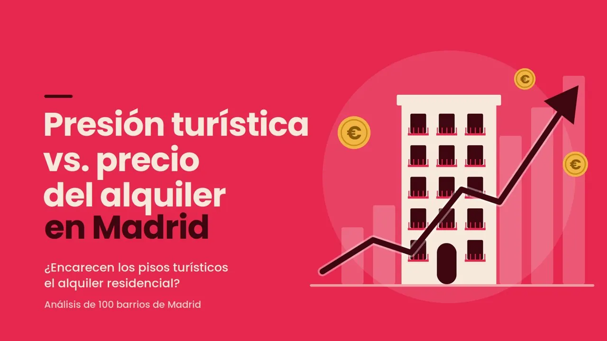

WINNDER: from negative ROAS to break-even with social ads
A video game competition platform with cash prizes. When I took over the account, ROAS was negative. With creative testing on TikTok and Meta Ads and brand campaigns on Google, the brand reached break-even.
 By Juan Cortés Paredes · Data Analyst · Updated November 2026
By Juan Cortés Paredes · Data Analyst · Updated November 2026
Campaigns had no funnel structure and no creative testing, and Google corrected "Winnder" to "winner", so brand searches were lost. Replacing static images with UGC, launching TikTok and recovering brand traffic with Performance Max led to +44% sign-ups, +23% first-time deposits and a move from losses to break-even.
- Role
- Paid Media Specialist
- Period
- 2024 → 2025
- Market
- Spain
- Channels
- TikTok Ads · Meta Ads · Google PMax
Can you acquire players without losing money?
Winnder is a platform where users compete in popular video games to win real money. Its goals are sign-ups and first-time deposits (FTDs), with target CPL and CPA.
The business model is new in Spain. It already exists in countries like the US, with strong competitors such as GamerSaloon. In 2024 CAC was not profitable, which limited growth.
How do you get sign-ups and deposits at a cost that lets the business grow?
What I found when I took over the account
Lost brand searches
Searching for "Winnder", Google corrected it to "winner" and results did not lead to the brand.
SearchNo funnel structure
Campaigns did not separate stages: the same ask went to people who had never seen the brand and to those who had.
Paid socialNo creative testing
Static images with no variations: there was no way to know which message worked.
CreativesUnprofitable CAC
Negative ROAS: each acquired user cost more than they brought in.
ROAS · CACWhat I changed and why
Creative testing with UGC
- UGC content instead of static images.
- Ongoing tests to find the angles and styles that worked best.
- Content re-planned across paid and organic social.
TikTok as a new channel
- TikTok launched in paid and organic, alongside Meta Ads.
- Channels where the brand's gamer audience spends its time.
Recovering the brand on Google
- Brand campaigns on Performance Max.
- They capture the searches previously lost to Google's correction.
Funnel and structure
- Campaigns organised by funnel stage, which did not exist before.
- Budget decisions based on ROAS and CAC.
2025 results vs 2024
UGC beat static images
Systematically testing angles and styles is what moved sign-ups the most.
A brand problem was a search problem
Brand PMax recovered people who searched for Winnder and ended up elsewhere.
From losses to break-even
With +44% sign-ups and +23% FTDs, the account stopped losing money.
Next question: scale
Reaching break-even raises how far it can grow while staying profitable.
Stack and metrics
Want to know more?
Email me and I will walk you through how I read the account data and which decisions came out of it.
Other projects

Do tourist flats push up rents in Madrid?
100 neighbourhoods, 5 sources and a Power BI dashboard.
View case study →
Bargain or rip-off? Fair price of a used car
71,220 listings and a CatBoost model shipped as a web app.
View case study →VERSUS: −37% cost per acquisition
Funnel, keywords and an acquisition landing page.
View case study →